UNIT 4: TECHNICAL MEANS IN MULTICAMERA TELEVISION PROGRAMMES
4.1. The technical configuration of the television production control
Television production control is the area where all the operations related to video and audio, as well as the articulation of the content that make up a television programme are centralized. This area is divided into different sections, which, depending on the channel, may vary in their organization. The main sections in a production control are:
1. Sound area: this is normally located in a separate room, but with a direct view of the production control; as a general rule, the separation is a glass partition like a fishbowl between the departments, which facilitates visual contact with what is happening during the broadcast of the programme. This function is carried out by a sound technician.
2. Image area or CCU: this section is in charge of working with everything related to the quality of the image from the cameras. This function is usually carried out by an image technician.
3. Realization area: this section contains the technical figures of the programme director and director's assistant. They are usually located near the video mixer and the VTR operator.
4. VTR area: using computer software, all the products that make up the rundown of the programme to be produced are launched. The VTR operator is in charge of making a playlist of all the contents, viewing them before they are broadcast and, during the production, giving the appropriate playback information to the producer.
5. Titling area: this area is
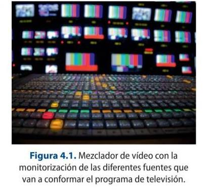
responsible for the live labelling of the programme, i.e. creating skirts with the names and positions of the people taking part or any other type of title that may be necessary, such as headlines, location graphics, etc.
6. Image mixing area: this is where, by mixing the different sources, a final programme is created with the help of a video mixer.
7. Production/editing area: this area is made up of production people who, during the broadcast, can carry out any necessary management during the programme. This area may also contain the CUE controller, i.e. the teleprompter or computer device made up of a series of mirrors that sends to the presenter or host of the programme the texts to be read out during the programme.
8. Management area: made up of the professionals in charge of the programme content. This usually includes the programme director, who is responsible for the information of the programme in question.
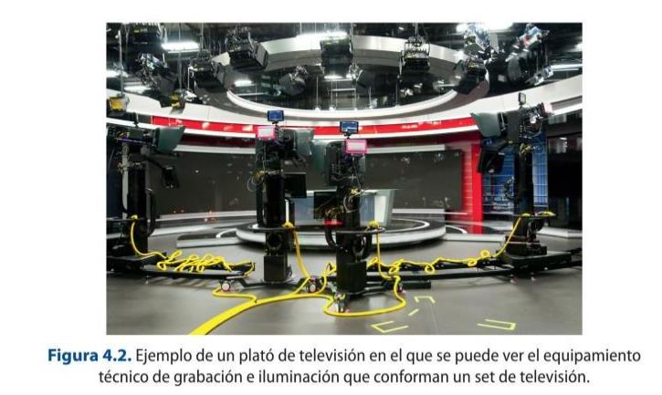
The production control is the technical operations centre of a programme and from which the audiovisual organization, structure and content of a television programme is carried out. It is usually located in an area away from the set, i.e. without a direct view. The set is the area where the equipment and technical professionals are located, as well as all the sets that are necessary to carry out a programme. The set of all the facilities is called a studio.
Remote and cloud production (REMI)
Cameras and staff no longer need to be co-located with the control room. In remote-integration (REMI) production, signals are sent back over IP (SRT, ST 2110, or cellular bonded links) to a central or cloud-based gallery, cutting cost and travel for live events.
4.1.1. Setting up a television set
Other elements that make up television studios are the studios' sets and platforms. The television sets are those locations where all the audiovisual technical systems are available to capture the signal, while a TV stage is the decoration of a section or a block that makes up a programme.
A television set is a production centre in which the different stages or decorations of a programme are arranged, on which the image and sound capture equipment is located for its production. These surfaces are usually perfectly insulated thermally and acoustically. They are equipped with grills and lighting sources. For image capture, there are studio cameras, which do not record, and their signal is sent to the CCU via a cable, Triax, Multicore 26-pin or fibre optic, generally connected to a studio box.
Some cameras have a built-in teleprompter or CUE or Teleprompter system, a computer application that stores the texts to be spoken by the presenters. It has a system of mirrors that reflects the text, the speed of which can be regulated and allows it to be viewed.
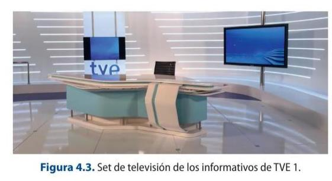
The set box is a video and audio rack that allows the connection of the different devices that exist on the set, as well as distributing them to the necessary destinations. Other devices that can be found in this type of professional locations are:
Video monitors: one for viewing the channel's broadcast signal and others for monitoring the return signal from the production.
Audio monitor: loudspeakers to reproduce the programme signal or any type of sound source necessary for programme production, such as, for example, a telephone call.
Intercom system: consists of a wireless network through an RF equipment with Belt-pack for each camera operator and a receiver-transmitter in the production control, which may be included in the cable used to connect the camera to the CCU, whose main function is to be connected and receive the command signals from the production.
Nowadays, many sets incorporate video walls or plasmas as a system to visually enhance the surface area. There are many different types: LED, interactive, etc.
The choice of cable type and connectors is very important for good picture quality. The
configuration and the distance in metres to be covered must be taken into account.
4.1 Set up a TV program’s set configuration.
Based on the information provided in this section, choose a television program. Analyze
and establish the different configurations present in it.
4.1.2. Set-up of a TV studio camera
Set cameras are made up of a series of elements corresponding to four large blocks:
1. The optics, where the elements relating to the lens and the viewfinder are found 2. The camera body 3. The power supply 4. The different types of supports.
One of the main differences with the rest of the types of cameras is that they are camascopes, they do not record and certain functions are remote.
These types of devices usually have fixed mounts, which are heavier and more robust. They have a monitor that allows the operator to visualize the framing that he/she wants to carry out, being able to work on the zoom and focus, as well as the visualisation of the programme return signal. This option can be switched by the operator himself depending on the needs that arise at the time of work. In addition, this display allows access to the camera's internal menu signal, for example, to change settings related to the display layout, zebra pattern settings, modification of the digital zoom precision, operator preset, configuration of the inputs and outputs, and so on.
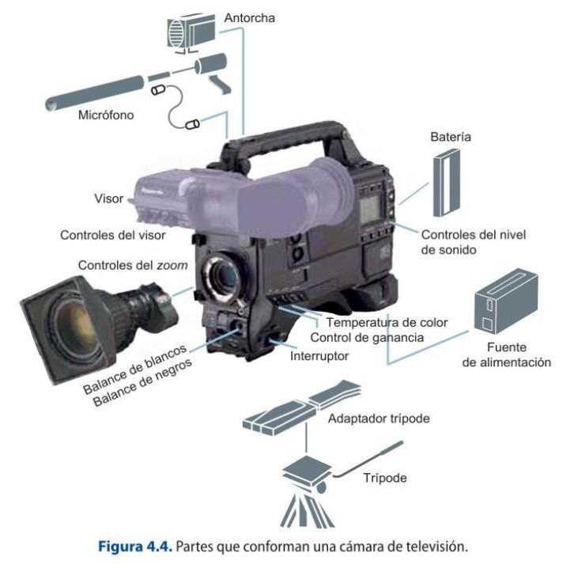
In studio work, it is common for cameras to be supported on tripods that have wheels to facilitate mobility or on more robust supports such as cranes, dollies, hot heads, travelling or steadycam, among others.
This type of structure and equipment is fixed and is always in a specific physical location, but there are times when it is necessary to move all the production areas to an exterior or location outside the studio. In these cases, mobile units are used to carry out the work.
GLOSSARY
Production truck or OB Van (outside broadcasting) : a set of technical resources at the video and audio level necessary to carry out the recording or broadcasting of a television programme, i.e. mobile production control.
Production trucks can have two essential types of interior layout:
In a single room where all the necessary equipment is arranged. In different rooms or areas.
There are different types of mobile units depending on several factors:
1. Depending on the length of the production truck, devices ranging from 7 m to 13.5m can be found. This aspect, the length of the OB, is important as it will determine where the truck is to be located and the type of technological configuration required.
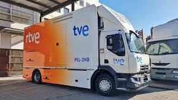
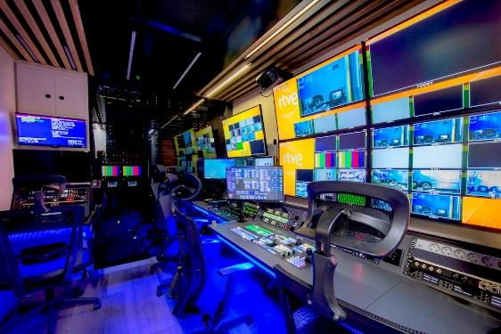
a) Large production trucks: These are those with ten or more 4K cameras and the working areas are usually separated. They are used to cover large events and generally have a built-in system to be able to transmit the signal they are producing.
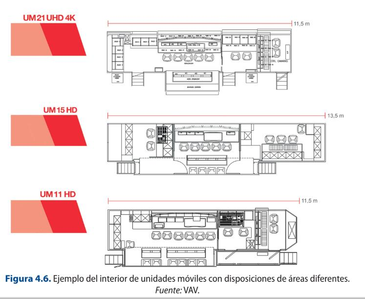
b) Intermediate OBs: they have less technical equipment than the previous one but are more equipped than the PEL mobile units. They are usually used in events where not many cameras are needed and normally have all the areas in the same room.
c) Mobile PEL or light electronic production units: they are production equipment designed for outdoor use but very versatile in order to be able to be located in more inaccessible places. They can be made up of an infinite number of configurations, depending on the type of programme for which they are intended. It is a unit widely used in news programmes.
d) Basic units: these are a smaller version of the PEL and consist of basic recording equipment, which can be dismantled and adapted to different requirements. Their cost is quite affordable.
e) Mobile satellite transportable units or SNG (DSNG) : the most relevant aspect is that they are made up of a satellite transmitter-receiver station through which the necessary information can be sent and received.
f) Suitcases or backpacks: these are small, portable devices that allow the transmission of the signal from ENG equipment from any location with mobile coverage without the need for satellite support.
2. According to their function in the production:
a) Production mobile unit: depending on the complexity of the event to be covered, it will have one configuration or another. This is the nomenclature given to the main mobile unit used to carry out the event.
b) Secondary mobile unit: this is the mobile unit that is subordinate to the production mobile unit and may be responsible for secondary functions of the programme or for part of the event.
c) Personalisation mobile unit: these are the production devices used at events where a channel wishes to produce a personalised signal of the coverage offered, so that it carries out a parallel and independent production.
d) Editing and post-production mobile unit: these are units whose main function is to complement the mobile production unit in the area of editing.
e) Sound mobile unit: incorporates specific sound equipment to cover a specific event which, due to its characteristics, makes its use necessary, such as the performance of a concert.
f) Link mobile unit: this is a unit which, independently, is enabled to carry out the necessary transmission operations with the central control of the channel.
g) Set unit: corresponds to a mobile device in which its space is enabled to support the set of an outdoor programme.
h) Electrogenic mobile unit: means a vehicle intended to supply power to the mobile production unit or any other type by means of generators.
i) Auxiliary mobile unit: vehicles used to assist in the transport of different audiovisual materials that are necessary to carry out the broadcast.
4.1.3. The continuity check
Once a programme has been produced, it must reach the channel in order to be broadcast, either live or deferred. Continuity control is the area of a channel that is designed to carry out all the operations necessary to broadcast the different programmes. By using computer software, such as Video Playout, a playout can be carried out for the programmes and slots that have been decided by the programming department for a given day. The channel's programming must be carried out in continuity and include both the programmes and the advertising blocks.
As mentioned above, a programme can be canned, so this department, in order to broadcast it, must "ingest" it into the system and load it, while if the programme is live, it must switch by "patching" the signal. In either case, it must ensure that the established video and audio broadcasting standards are complied with, using the necessary signal representation devices to control the video and audio parameters.
4.2. Television system configurations
The configuration present in a television system depends on the type of channel or company, i.e. the type of technology used will depend on the needs derived from the production itself, as well as the economic capacity to be able to invest in the latest technological systems used in the different areas.
4.2.1. Elements constituting production control
Within the area of production control there are various technical devices, which are detailed below.
VIDEO MIXER
A mixer or switcher allows the selection, switching, manipulation and mixing of different video sources or signals through the use of wipes, transitions, effects and even the generation of chroma key or image inlays. All the signals that are going to be used in the production of the programme are connected to the mixer, such as television cameras, servers, VTRs or video recorders, playlist systems... and any type of source that needs to be incorporated into the final product, which will be monitored in a multi-screen system that will also include the programme signal and the preview signal, in addition to the display.
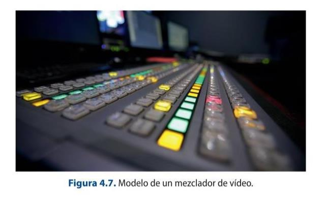
CAMERA CONTROL UNIT (CCU)
The CCU is a system for calibrating and adjusting image quality by manipulating a number of parameters. This system also adjusts the image values to the needs of the shot and keeps the signal within safe emission levels (from -3 to +7 mV).
The studio cameras are linked to a camera control unit via the appropriate connections. The CCU is operated by an image technician who will carry out the different image modification actions required from the remote control. There are different types of CCU, but all of them basically have the same elements or differentiated parts. The elements that make up this type of system are:
Video signal monitoring. Vectorscope and waveform monitor. These are oscilloscopes that allow signal analysis. Intercom or internal order communication system between the different technical departments. The actual control of the cameras and their CPR, which is a modular system that allows them to be controlled independently and remotely from where the installation has been carried out.
4.3 CCU Characteristics
Watch the following video and explain the functions and characteristics of a CCU:
Camera Control Units (CCU)
The parameters that can be modified in a TV set camera are the same as in any other camera, with the exception of zoom and focus control, the rest of the "settings" can be done remotely through the CCU. Therefore, the basic operations that can be performed are:
White balance. ND filter selection. Allows you to reduce the wavelengths of light hitting the camera sensor, thus affecting colour reproduction. Black balance. Diaphragm control. Black pedestal control. Independent black pedestal control. Electronic gain control. Bar generation. Storage and recall of operations.
GLOSSARY
Vectorscope: oscilloscope that allows the representation of the chrominance signal present in the video signal. Set of images that make up the television programme and that will be broadcast by the corresponding control.
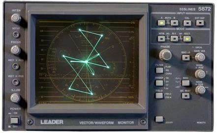
Waveform monitor: oscilloscope that enables the representation of the luminance signal of a video signal. There are systems that allow switching between the two types of signal displays, such as the device shown in the following picture.
Such displays are purely graphical, i.e. they can only be changed by operating on the controls of the video signal, not by working directly on the oscilloscope.
AUDIO AND VIDEO RACK AND PATCH PANEL
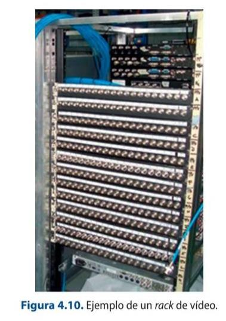
Racks are very resistant metallic structures with a series of plates made up of connectors (patch panels) that allow the connection between different equipment and even rooms.
There are two basic types of patch panel in a studio: video and audio. In both cases, the connectors they contain are clearly identified to know whether they correspond to an input or an output and to which type of equipment they refer to. Normally, the upper rows correspond to the output signals of the equipment and the inputs are in the lower rows, but this may change and it is therefore very important that they are clearly labelled.
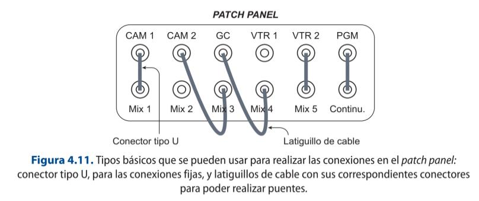
Other types of connections to be considered are:
Distributors o Splitter: systems that allow a single signal to be switched to different equipment, i.e. they provide different outputs of a single signal, so as to facilitate its use in different positive dis. For example, a program signal to be recorded on a video recorder, a DVD and a server for storage.
Switching matrices: they are used in those rooms or controls that require distributing many signals to multiple equipment.
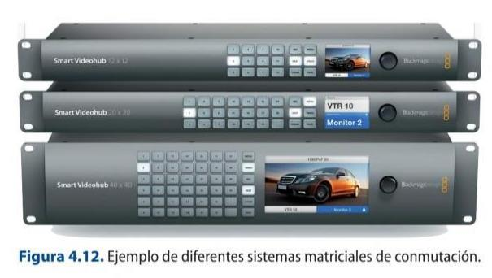
TYPES OF VIDEO AND AUDIO CONNECTORS AND ADAPTERS
In the process of working with video and audio systems, a wide variety of cables and connectors are used, each of which is designed to fulfil a specific function.
A connector is an element that connects the cable to another device (camera, video recorder, end-to-end line...). There are two types:
Male connector, the one that receives the signal. Female connector, which provides the signal.
Nowadays, although digital technology has been implemented, analogue video signals are still used in some cases: S-Video, VGA, RCA, Euroconnector or RF coaxial, which is increasingly out of use. The most commonly used types of video connectors are:
1. S-Video/S-VHS/Separate-Video or MiniDin4: connector used for analogue video which has a high quality. It can be found with different numbers of pins in applications that are not exclusive to this area, such as mice or computer keyboards.
2. VGA (Video Graphics Array): There is a Mini-VGA version. They can be found in the connection of PC monitors or projectors, for example.
3. BNC: there are male and female. It is widely used at a professional level and has two versions: without gle link (they support video transmission up to 720p) and dual link (they support video transmission up to 1080p).
Composite video: allows the transmission of HD video signal without audio. Scart or euroconnector: used to connect two devices and both video and analogue audio in a bidirectional way.
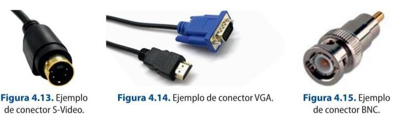
4. Coaxial RF: it is a cable often used in antennas, but it also allows the transmission of video and stereo audio modulated in a radio frequency signal.
5. DVI: transmits high-definition video. There are different types depending on the signal it can transmit: analogue, digital or both (DVI-A, DVI-D, DVI-I).
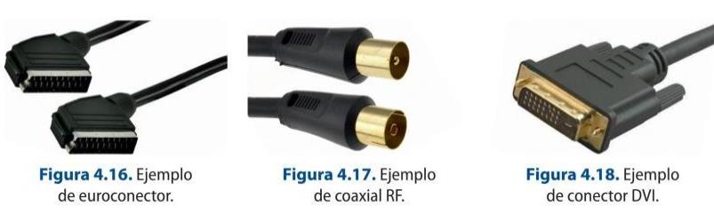
6. FireWire or IEEE 1394: allows high-speed data input and output, as well as connection between digital devices. There are three sizes: 4-pin or mini FireWire, 6-pin FireWire and 9-pin FireWire. There are in turn different types depending on their data transmission capacity: FireWire 400, FireWire 800, FireWire s800T, FireWire s1600 and FireWire s3200.
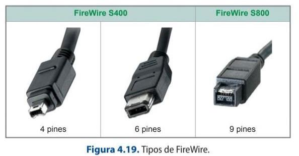
7. HDMI: transmits ultra HD video and audio. It is one of the most widely used.
8. DisplayPort (DP): transmits image and sound like HDMI, and signals at a bandwidth of up to 32.40 GB/s, i.e. a video resolution of up to 8k.
Several audio connectors can be distinguished:
1. RCA : an analogue audio and video system used in the home that has two contacts: tip and ring, which serves as the terminating element of an unbalanced shielded line. Each signal needs its own cable. It is an asymmetrical input and output connector, where normally the male goes on the cable and the female on the equipment.
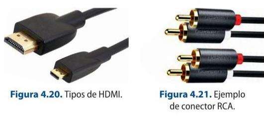
2. Jack: this is one of the most commonly used. There are different types: mini Jack or 1/8 inch and 1/4 inch or Jack. In turn, it can be mono or stereo. It is a metric input and output connector.
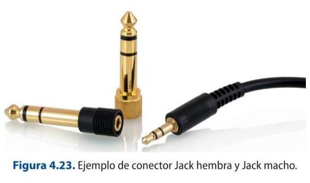
REMEMBER
Jack connectors can be either mono or stereo.
If the connector is mono, it has a black stripe, which serves as an insulator in the connection area. The outermost part corresponds to the signal cable, while the inner part connects the cable shield.
If the connector is stereo, the tip corresponds to the right channel, while the left channel corresponds to the area between the two black marks, and the rest is the shield.
Interesting related Info: https://magroove.com/blog/es-mx/diferencia-entre-mono-y- estereo/
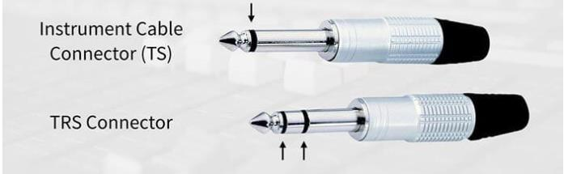
3. XLR or Canon: This is the most commonly used at the professional level. It is made of metal, has three contact points, has a tab that makes it difficult to disconnect accidentally and is used in balanced audio cables. There are two types: male and female, for both base and air connections. This is a connector that allows connections to be made to balanced microphones.
Adapters are used to convert the connector types for ease of use. There are video and audio adapters. The most commonly used video adapters are:
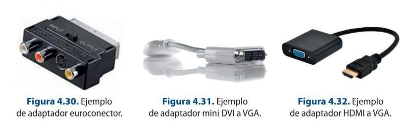
1. Euroconnector adapter: it is used for input and output signals; for this purpose, it has a mutator that allows you to select it.
2. Mini DVI to VGA and mini DVI to HDMI adapter: allows some laptops to be connected to projectors.
3. HDMI to VGA Adapter: allows you to connect an HDMI output to a source that has a VGA input.
4. Coaxial optical adapter.
5. HDMI-DVI converter.
6. Coaxial adapter.
7. RCA-BNC.
8. BNC-BNC.
The most commonly used audio adapters are:
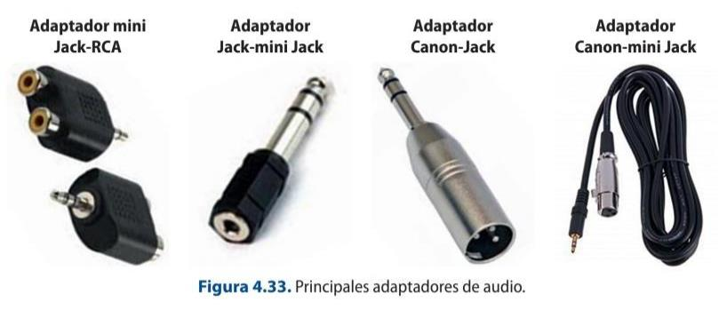
1. JACK-RCA
2. JACK- MINI JACK
3. Canon-Jack
4. Canon- mini Jack
4.2.2. Monitoring, measurement and control of analogue and digital video signals: waveform monitors and vectorscopes
The main reference devices and equipment to be able to monitor the video and audio signal are:
1. Waveform monitors: they are an oscilloscope that represents the luminance signal of a video signal.
2. Vectorscope: an oscilloscope that represents the chrominance of the video signal.
4.2.3. Block diagram of audio and video technical equipment
The different configurations of equipment and rooms that can be found in a production set can be laid out schematically to see the interrelationship between the different components. Block diagrams are used for this purpose.
The block diagram is a graphic representation of the relationship between each and every one of the different components and materials used. In the case of audiovisual productions, the video and audio elements used in a production will be marked, so that it serves as a basis for establishing budgets or even the connection of the different departments in order to speed up their subsequent work.
As an example, the following block diagram of a set with three cameras can be extrapolated to other cases. This will be done by dividing the signal into image and sound, as this makes it easier to understand the proposed diagram.
The set cameras are connected to the set box, which is made up of a series of end-to- end lines, which allow the signal to be taken to the camera control unit so that it can be worked on. The CCU, in turn, must be connected to the different oscilloscopes and monitors to be able to check the image of each of the cameras, as well as the programme image. Once the settings for each of the cameras have been made, the signal can be sent through a patch panel to the different devices, which will receive the signals that will make up the programme and which will be mixed through the switcher.
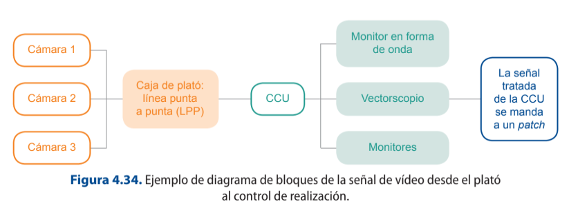
The video sources arriving at the mixer must be monitored to allow their correct use within the programme, as problems of composition, colorimetry and focus errors can be perceived.
The signals arriving at the patch panel can be augmented (aumentadas) by using the distributor, which allows the same signal to be used and multiplied as many times as necessary (splitter). From the rack, the signals will reach the video mixer, and each of them will be monitored so that the producer can observe them and decide how to use them in the programme. In this multi-screen system, it is important to highlight the existence of monitors for the preview, programme and, if necessary, broadcast signals.
4.4 Splitter
What is a splitter? What is it for? Add 3 different types of audio and/or
video splitters and explain in which situation you would use each one of
them.
From the mixer comes the programme signal made up of the different video sources,
which can be recorded and canned or directly distributed in real time in live
production to the continuity controls or to the central control, depending on the
configuration of each channel.
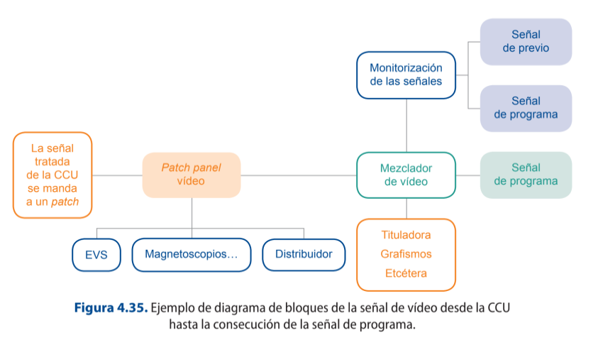
It is important to note that the programme signal must be distributed back to the set via the end-to-end line connectors to all those devices that need to receive the feedback.
All of the above applies to the audio signal.
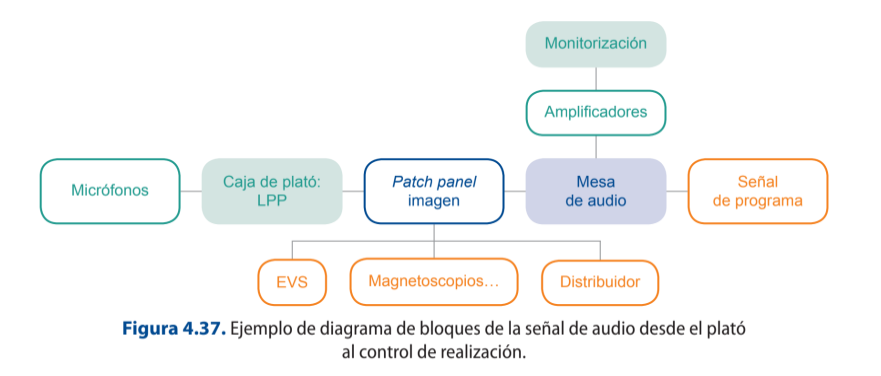
Power amplifiers
A power amplifier is an instrument that supplies the necessary power to the loudspeakers
according to the electrical input signal. The loudspeakers are responsible for transforming this
electrical power into acoustic power. It is an electronic element that allows the intensity of the
current of a signal to be increased.
The audio programme signal must also be sent back to the set in order to have a
reference of what is being broadcast. In this case it is important to send the n-1 signal,
i.e. send all signals except the signal of the source to which it is to be sent.
GLOSSARY
EVS: is a server for storing data, audio, video, etc., which, by means of a system of optical discs or solid state memories (disco duro), allows the implementation of professional applications depending on the area implemented. There are two main parameters that define them: storage capacity and digital bandwidth.
In the audiovisual area, this type of server can be used in production distribution, allowing several people to access the same video clip in real time, modify it and upload it back to a playlist or wherever it is needed. This material can be viewed in different resolutions, sizes and quality. In live programme production, they are used for replays, real-time edits of previous events, ingesting different sources and even recording entire programmes.
They have also been implemented in the broadcasting area, as they allow the simple and quick editing of the different advertising blocks, as well as in the storage of programmes and the creation of a daily or even weekly playlist.
At EITB, for example, this data storage server is called SARBIDE.
It is also important to establish two more signals that are very important for the success of a programme:
1. Earpiece signal: communication system that is used with the figures intervening in a programme, such as the presenter.
2. Intercom signal: communication signal used between the different technical teams on set and the control system.
The command systems are made up of:
Self-powered loudspeakers. Signal selector to be able to switch between the different sources coming from different departments. Microphones to be able to capture the voice of the interlocutors. Signal attenuator or volume controllers for each signal. Alarm system to be able to draw attention to a direct user.
4.3. Types of audio input and sound desk sends
As we have seen in the first section, an audio console has a series of important elements that are essential to know. The main types of audio inputs that can be found in a sound desk are:
1. Line input: those source inputs that are not microphone inputs and, therefore, need little amplification.
2. Microphone inputs: those coming from microphone pick-up. In these cases, the table has a button to switch to phantom power (48 V), which is necessary for condenser microphones.
The different sources shall be mixed by using the audio table to obtain the audio programme signal. This signal shall be transmitted together with the video programme signal as a unitary product.
While this signal is being elaborated, it is necessary for certain professionals or departments to be able to listen to this signal in order to proceed correctly with the execution of the programme. In this sense the main receivers of the signal will be:
The sound control room itself, to actively listen to the programme and be able to tackle any problems that may be occurring.
The realization control, where the director and the programme director are key to the extent that active listening to what is being broadcast determines the work they are carrying out.
The professionals who are on set, journalists, the programme host, etc. This part is very important, as, in addition to following all those canned pieces that are being broadcast and learning about their content, it also favors interaction among other connections with journalists or collaborators who are not in the recording studio. In this case, it is essential that listening to the programme on the set does not contain the sound information of the participants on the set in order to avoid sound problems such as possible feedback. This type of feedback is even more important in musical performances.
Finally, as mentioned above, listening to the feedback signal is essential to check what really reaches the audience, is the same sound signal that is being broadcast. In addition, this makes it possible to visualize possible faults derived not so much from the control of production, but from the continuity of the signal.
4.4. The video mixer
A switcher allows the selection, switching, manipulation and mixing of different video sources or signals through the use of wipes, transitions, effects and even the generation of chroma keying.
The following basic elements can be found in the switcher:
1. Bank or Mix/Effects: this is known as the arrangement of at least two busses. Depending on the desk, it may have different banks, which are hierarchically arranged so that each of them can be used as an independent source within the program bank. The buses correspond to the row of buttons or pushbuttons where each one of them is associated to the signal input. There are two buses that make up a bank:
a) Preview bus: signal that displays the selected video source in advance at its output, before being output or not.
b) Programme bus: signal that displays the switched source at the output according to the source selection made. If there is a third bus, it is usually intended for Key or embedding generation.
2. Main menu: here you can find the main settings that can be modified in the table, from changing the type of signal that arrives at a given bus to the type of transition that you wish to execute. The configuration of each table is different, so it is advisable to read the manual for each type before using it.
Other parameters that can be found in all the mixers are:
1. Settings to be able to make transitions between planes. In this section it is possible to establish the procedure by which a transition from one primary signal to another selected signal is made. It is possible to carry out this process through three basic procedures:
a) Cut: direct way of making the transition between two planes.
b) Chaining: a transition between two planes whereby one plane is progressively replaced by the next selected source.
c) Fade: transition in which the image progressively fades to one colour or from one colour, usually to black.
Transitions can be made across the table in two ways:
a) Manual: the mixers have a transition lever that allows it to be moved in any direction to effect the selected change between two planes. The speed of the transition itself is proportional to the speed of this tool, which has a flip-flop structure, i.e., back and forth, so that by moving the lever from one end to the other, a complete transition can be made.
b) Electronic: push buttons used to perform the transition when it is executed. These can be:
Auto button: carries out the operation according to the selected specifications in seconds or frames. Cut button: the operation is carried out directly between the buses, i.e. the step is cut.
2. Key settings control: section destined to collect all the useful parameters to be able to carry out any type of chroma key. For example, colour selector, type of chroma key, etc. This technique or electronic process makes it possible to combine two output signals in real time by extracting colour information and embedding another signal as a background.
In order to make a chroma key, two types of sources are required:
1. Primary source: this signal can be bluescreen (the colour information contained in the image is blue) or greenscreen (the colour information contained in the image is green).
2. Background or fill source: this corresponds to the image over which the main image is to be superimposed or embedded.
3. Effect control: these are settings that allow you to choose the type of wipe you want to use and modify parameters such as position, border, rotation, etc. Each effect, depending on its type, will have a series of specific settings.
All the signals that are linked to the video desk will be monitored either in simpler systems or in multi-screens in order to be able to see and analyse the images before broadcasting them. In this way, a monitoring system is found with:
All the signals coming from each of the cameras used. All the signals coming from any type of device containing visual information, such as servers, video recorders, duplex or live connection signals, etc.
Monitoring of the pre-record or pre-broadcast signal. Monitoring of the programme signal or the signal sent to playout. Monitoring of the broadcast signal or that which shows what the viewers receive in their receivers.
GLOSSARY
Programme signal: set of images that make up the television programme and that will be broadcast by the corresponding control.
Broadcast signal: set of images and audio that the audience is receiving on their television sets.
The programme signal and the signal being broadcast do not necessarily have to be the same. For example, during the production of a live programme, when an advertising block is being broadcast and at that moment the production control has the first frame in the programme, belonging to the programme's advertising return graphics. At this moment, what is about to be broadcast does not correspond to what the audience is watching on their television sets.
4.6.TV PROGRAMME ANALYSIS
Analyse the different image sources that make up the following video from Eitb's En
IP video production: SMPTE ST 2110, NDI and SRT
The SDI router-and-mixer model in the book is being replaced by IP-based production. Broadcast facilities move uncompressed video, audio and data as separate flows over the network with SMPTE ST 2110; smaller studios and live streaming use NDI (and NDI HX) on the LAN and SRT for reliable transport over the public internet.
Hardware switchers now sit alongside software/cloud switchers (Blackmagic ATEM, vMix, OBS), and PTZ cameras controlled over IP have become standard in multi-camera setups.
Sources: SMPTE 2110 (Wikipedia) · NDI (Wikipedia)
4.5. Difference between programme audio and intercom audio
Jake programme and make a table with the information.
TIME INPUT1 INPUT2( 2 signals at INPUT3 (3 signals at In a television programme, two types of audio signals can be distinguished at a general level: the programme signal and the intercom or intercommunication signal. the same time) the same time)
The programme signal is the signal that comes from the final mix of the different sound sources that make up a given programme.
Another very important audio signal when making a television programme is the Intercom. This signal corresponds to the command signal and is bidirectional. Its main function is to transmit the considerations and orders that the producer or director of the programme is giving to each and every one of the departments involved in the creation of the programme.
The main sound elements that make up a television programme signal are:
The words.
The music.
Ambient sound.
Sound effects.
Silence.
4.5.1. Intercommunication systems between departments
The main channels of orders at the technical level come from the director and reach the following professionals: Sound control.
CCU. Director. Camera operators. Set sound. Set assistants. Lighting. Recording area. Continuity department, for information such as when the programme starts or ends. Signal orders to the outside connections, where, on a smaller scale, the operator will receive control signals and the journalist will receive direction signals.
4.5.2. Cable and RF intercom. The Tally signal
The intercom signals allow, as mentioned before, to know the orders that are necessary to carry out the programme from the production control. These signals can be received on set in different ways:
1. Gestural signals. Performed by the set supervisor (regidor)
2. Tally signal. This is a red light on the studio cameras that provides real-time information about the camera that is on or in the programme at the moment it is flashing. This information is useful for both the cameramen and the presenter to know which camera to look at to address the audience.
3. Intercom signals. These are usually managed by means of a switch that allows the recipient of the different orders to be selected, so that the rest of the professionals do not hear if it is not necessary. This type of signaling can be carried out by means of two systems:
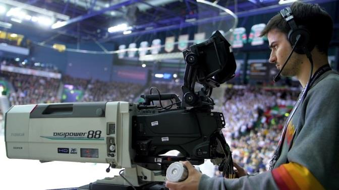
a) By cable: the main disadvantages of these devices are the lack of mobility on the set, as they are limited by the length of the cable.
b) Radiofrequency or RF: the main advantage of this system is mobility, unlike the previous one, as they are wireless and each professional has their own receiver and headset independently.
4.6. Video and audio recording media and formats
When working with video and audio, a series of basic formats used in television production sets can be established. Depending on the resolution, i.e. the number of horizontal lines present, three types of formats can be established:
1. SD Standard Definition: where the main formats are PAL, with 576 lines, and NTSC, with 480 lines.
2. HD or High Definition: in this type of standard there are formats from 720 lines to 1080 lines with their different variants.
3. FHD Full High Definition: This standard includes K formats from 1920 lines.
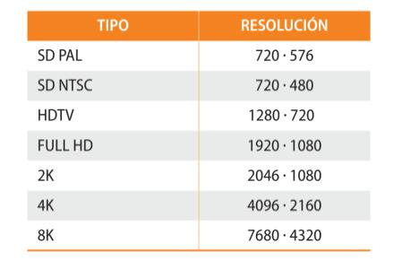
Sometimes audio and video must be transmitted over the same cable or fibre, i.e. embedded. This type of transmission must be carried out in accordance with the SMPTE 292 M standard, which regulates the HD and SD video signal and establishes the broadcast standards for digital audio included in a video.
4.7. VIDEO RESOLUTION
Read the following post and write down the most important ideas.
Video Resolution : A Beginner’s Guide
SDI-only chains and tape formats
Pure SDI infrastructure, analogue composite links and the videotape master formats listed here still exist but are legacy. New builds are file- and IP-based; SDI now coexists with (or is replaced by) 2110/NDI.